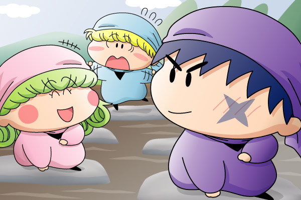

２００４年末に『あなたが思う２００４年に活躍した妖精は誰？』という企画をムルモ屋本舗の掲示板上で行いました。皆様からいただきました熱い投票により、ムルモ屋本舗版２００４年ベストオブ妖精が決まりましたので、本記事にて報告します(^^)。
■ルール
２００４年のアニメミルモ／原作ミルモで活躍したと思う妖精を５位、４位、３位、２位、１位の順に５人選びます。皆様からの投票により各キャラに以下のpointが加算され、最もpointの高い妖精が２００４年ベストオブ妖精に認定されるというわけです。
| １位 … 10point |
| ２位 … 8point |
| ３位 … 6point |
| ４位 … 4point |
| ５位 … 2point |
※タコス＆イカスといった2人指名については、タコス3pointイカス3pointのように分配。
■結果発表
ピピッチさん、栗星 恵理さん、Satさん、蒼ちゃん、魔戦好さん、そして私からの投票により以下の順位となりました♪
| １位 | 32point | サスケ |
| ２位 | 28point | ミルモ |
| ３位 | 26point | リルム |
| ４位 | 18point | アクミ |
| ５位 | 12point | ワルモ団 |
| ６位 | 10point | ムルモ |
| ヤシチ | ||
| クモモ | ||
| ９位 | 8point | タコス |
| １０位 | 6point | ガビン |
| ヤマネ | ||
| イカス | ||
| １３位 | 4point | ハンゾー |
| １４位 | 2point | アロマ |
| ネズミ |
上位は大激戦となりましたが、主人公ミルモを差し置いてサスケくんが見事１位を獲得。ヤマネにフラれたり、フェアリンピックでは健気にヤシチを応援する姿がとても印象的だったと私も思います。企画の記念に上位３名を登場させた絵を描いてみました。
ミルモ＆リルム＆サスケ(1) [PDF]

サスケ「オイラについてこれるとはリルムもなかなかやるだぜ」
リルム「いいえ、いつも修行されているサスケさんには私もついて行くのがやっとですわ」
サスケ「へへ…照れるんだぜ…」
ミルモ「おい、オレを置いていくんじゃねぇって…。
どわ～っ、落ちる！」
２００４年ベストオブ妖精に選ばれた記念として、サスケくんが一番カッコよく見える絵を描いてみました。後ろの２位と３位の２人は、あくまでサスケくんの引き立て役です(^^;。アニメでも一度でもいいから年上のミルモ＆リルムを従えて活躍するサスケくんを見てみたいものです(^^)。
ちょっと色遣いに失敗して分かりにくいのですが、狭い足場を頼りに川を渡る修行を３人がチャレンジしているという構図になっています。いつものヤシチの修行を見る限りではサスケが上手に川を渡れるとはとても思えませんが、今回はせっかくの１位を記念してカッコよいポーズだけでも決めていただきました。
ここからは皆様と私の投票カキコを再掲します。
★こやまる★
５位：アクミ
悪役キャラ（黒アクミ）から思いやりのある女の子（黄色アクミ）に大変身♪
９２話「リルム・アクミの30分クッキング」にて、料理が苦手というリルムとの意外な共通点が見れたのも良かったです。
４位：ミルモ
ミルモ子だったりチアリーディング姿だったりと女装が目立った２００４年。タコスに「タコちゃん」とかわいく言った直後に思いっきり怒鳴りつける極悪ぶりも素敵♪
３位：ガビン
フェアリンピック予選でミルモに勝ち、決勝でも大活躍するガビンの姿を誰が予想したであろうか！？１３０話「インチョが委員長でイイーンチョ？」にて目を回すヤシチを心配そうに見つめるガビンがぐ～でした。
２位：リルム
２００３年と比べて料理の腕前がさらに上達(笑)。
１０４話「やっぱりカールでしょ」で見せた勘違いっぷりには圧倒されました。
１位：サスケ
恋する相手（ヤマネ）にフラれてしまったのはアニメミルモ史上初めて！
ハンゾーの胸を借りて大泣きしたシーンが未だに忘れられません。
…かと思えばまだまだヤマネには未練がありそうで、２００５年も目が離せません。
★ピピッチさん★
５位・・タコスです。理由はイカスもでてきてめだっからです。
４位・・ヤマネちゃんです。・・理由・・、え～と・・。
３位・・ミルモくんです。まぁ、主役なので・・。
２位・・アクミちゃん。いろいろ活躍しましたよね。
１位・・こやまる様と同じく『サスケ』くんです。理由はこやまる様とほとんど同じです。ヤマネちゃんのことで大活躍だったので♪
★栗星 恵理さん★
５位⇒ヤマネちゃんかな・・・；；理由はなんとなくです＾＾
４位⇒ミルモですねっ＾＾主人公ですし＾＾
３位⇒タコス＆イカスですね；； 見られない生物ですし（意味不明
２位⇒サスケかな・・・ 理由はよく分かりませんが・・・
１位⇒ムルモですね＾＾?僕たちの宝物?泣けましたし（馬鹿
★Satさん★
５位：>ミルモだぜぃ!!
今年は強敵・ダアクも倒したし、これからもらしくない王子として頑張ってもらいたいと言う私からの思いを込めて投票しました。
４位：アクミだよ！
年の初めは黒アクミだったけど、ダアクが封印されて黒魔法からも解かれ、元の黄色いアクミに戻った今年、オマケに沙織のパートナーになって、思いやりあるいいトコまで見せてくれました。（「アンタにアタイの何が分かるんだい？」と言われそうなコメントです^^;）
３位：ワルモ団!!
ダアクが封印された直後も、黒魔法の紋章を手書きしたり、やっぱりドジだったり、なんだか強くなったり、ピンク色になって
いいことをしようとしたり、最終的には鉄仮面…あの覆面を外す日は来るのでしょうか…。
２位：サスケ＆：ハンゾーだぜー、なのら～。
此の二人は此れで一人ってコトで(^^:)
でも此の二人、今年はなんか成長したような気がしますよ？私だけでしょうか??
サスケに至っては、ヤマネに恋心を抱いてしまって色々と×××な…？
１位：リルムですわー!!
今年のベストショット、リルムのカールが取れてストレート・リルムになってしまった『やっぱりカールでしょ』。
こやまるさんもストレート・リルムの絵を描いていましたよね？
それから、脅威の胃袋を見せてくれたこともありましたよね
極めつけは、リルムと言えばなんといってもあの『得体の知れない料理』でしょう。
出てくるたびに進化するリルムに料理、時にアクミと手を組み口にした者を星に変えるほどの美味しい(?)チーズケーキまで作り上げてしまうのですから。
リルムの料理が出てくるたびに思うこと「一度でいいから食べてみたい。」。
（物好きでしょうか？）
★蒼ちゃん★
５位…アロマ
理由…少し順位低めですが上半期私の好きなキャラダントツでした
ＳＰ最初のゲストキャラでしたし…
今でももう一度の復活を願っています
私的には上半期の妖精のキーマンだと思いました(マテ
こやまるさんに絵リクしたアロマちゃんが２月１０日できたら
内心でアロマの日が祝えそうです(マテ
４位…ミルモ王子
矢張りダアクを倒し，遂には楓ちゃんを滅茶苦茶怒らせてしまいましたね
更に原作でも既にあった女装…
更にはインチョに対抗して学級委員まで…(しかし直ぐに後進を譲る)
何時もは怠けていてもやるときはやる王子ですね
でも楓ちゃんのお小遣い本当に残っているのでしょうかね(ぇ
３位…タコス＆イカス
２００４年の主役はタコスでしょう(それだとタコスでポンか…)ぇ
イカスも途中から乱入してきて…
更にはうさぎまで…(更には今度はリスとかも…)
残りクリスタル次第ではタコスは３月で終焉(終わり)またはまだ目的があるのか
ＷＨＦでＳＰステージがある限り４年目続投を願いたいところです
２位…リルム
わんだほう第２話やその他色々活躍したといえばリルムちゃん
リルム・アクミの３０分クッキングでも凄かったですしね
料理の腕前は本当に仕方ありませんが
まだまだミルモに向かって大暴走してほしいところです
そして栄えある１位は…
１位…ヤシチの兄貴！
理由は勿論フェアリンピックの反則，秋ナス魔法です
フェアリンピックの反則は何度犯したやら…
それでも優勝をするという大偉業を成し遂げるし…(精密機械兄貴とか…)ぇ
また楓モテテモーテの話しでは１年目に戻ったような気がしたりとか
矢張り私としては兄貴にはミルモと決着を希望です
１年半ほど前までは兄貴ブームがあったと言う人気度もあったと言う兄貴…
今度こそ人気投票でミルモ・ムルモ・楓を抜き去り
１位をもぎ取れるかも２回目があったら見てみたいです＾＾
★魔戦好さん★
５位：ネズミ（ラット）
ラットとしての活躍もあり、ダアク戦ではなかなか良い攻撃も見せ、ヤマネを思いやる気持ちもありました。
ごおるでんだけの登場で、今年はあまり出なかったので５位です。
４位：アクミ
少女漫画が原作とは思えない程の魔法攻撃を見せてくれました。
ダアクに対する想いとダアクとの別れはアクミの感情がうまく出ていて良かったです。
わんだほうになってから、沙織との絆がうまく描かれているのも良かったです。
３位：ワルモ団
ごおるでんの時はもちろん、わんだほうになってからもいろいろと悪くまぬけに行動して面白いです。
「やっぱりドジだね ワルモだん」の時に、５人が屋台を演出しているのがかなり面白かったです。
そして、ワルモ団といえば、ゴローのつっこみもさえていました。
２位：ミルモ
主人公だけあって、妖精に限らず人間の悩みや問題もさまざまな方法で解決してきました。
学級委員長になったり仮の王になったりしましたが、まだまだ王族という感じがしない妖精として活動しています
１位：クモモ
縁の下の力持ちという存在です。
善悪の区別無く、あらゆる商品をあらゆる客に売りつけるミモモショップの方針は、商売人のあこがれともいえるショップだと思います。
店長のミモモはコミモモの世話かどうか分かりませんが、なかなかミモモショップに出てこないので、今回の１位はクモモです。
最近は成長してあまりドジをせず、かなり活躍しています。
そういえば、カモモはもう出てこないのでしょうか。
そのうちまた同じような企画を行いたいと思います。このたびはありがとうございました。
(2005/1/16)